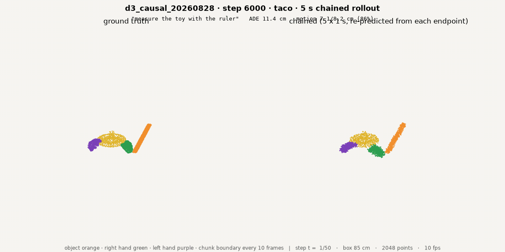

3D-WAM · data, architecture and training for the D1 / D2 / D3 pilot
Lab meeting
2026. 08. 28 Presented by Beomjun Kim
Overview
[TL;DR] Direction cosine decides everything; threshold 0.5, we are at 0.266
Done: 10 Hz human-only data, re-preprocessed
Done: four arms complete, plainest one wins
Decided: no auxiliary losses, no motion reweighting
Discuss: identifiability ceiling · history · duration
designs — token count and attention mask per arm · what each one isolates
Wan 2.2 (github.com/Wan-Video/Wan2.2) · PTv3 (arXiv 2312.10035) · MolmoMotion (arXiv 2606.18558) · General Flow (arXiv 2401.11439)
Method (1): Data at 10 Hz, human only
Coarser time, every phase offset, half the points per entity
10 Hz replaces 15 Hz: bigger per-step motion
Stride 1 replaces 4: every phase offset trainable
Human only — Sharpa dropped from training
Motion-jump threshold rescaled for the new rate
inventory — training chunks per dataset after the motion filter · episodes annotated
re-preprocessed in 25 min on six parallel CPU-partition jobs · 44 GB · OakInk2 grew from 134 to 492 episodes
Method (2): Time as a token axis
Video DiTs make time an axis; we had kept it in channels
Patch = eight serialization-adjacent points
One token per patch per frame
Rotary encoding on the frame index
Head is one-to-one — nothing compressed away
tokenisation — real Hilbert partition, 2-D projection · left to right: curve, patch to token, (frame × patch) grid
patch construction = PTv3 serialization (Wu et al., CVPR 2024) used as Wan's Conv3d patch embed; unpatchify verified exact
Method (3): The three experiments
Each arm changes one thing, so the answer stays readable
All three share data, loss and size
D1 changes only the structure
D2 changes which tokens may talk
D3 makes time run one way only
the three arms — top to bottom: tokenisation · attention reach · what each borrows · the prediction that would confirm each
D1 = Wan patch embed + full 3-D attention · D2 = PTv3 serialized windows · D3 = D1 + block-causal temporal attention (MolmoMotion: its autoregressive head beat its own flow matching)
Results
Longer training moved D1 off the curve: same error, 78 % motion
Duration was the untested variable
D1 motion 44 % at step 3.4k, 78 % at 10k, error flat
cosine 0.145 to 0.266, magnitude self-calibrated to 94 %
MolmoMotion zero-shot — hands beat the baseline, objects do not

trade-off — error vs generated motion, one line per arm, points are checkpoints · labels are training stepsD1 chained rollout — 5 × 1 s, re-predicted from each endpoint · left ground truth, right generated
baselines on this configuration: zero-flow 14.66 cm · oracle velocity extrapolation 16.40 cm — not comparable to the earlier E-series numbers (different rate, horizon and split)
Results
One number decides it: direction cosine, threshold exactly 0.5
Duration was the untested variable
D1 motion 44 % at step 3.4k, 78 % at 10k, error flat
cosine 0.145 to 0.266, magnitude self-calibrated to 94 %
MolmoMotion zero-shot — hands beat the baseline, objects do not

threshold — error ÷ zero-predictor error against direction cosine · measured points on the solid curve

D3 chained rollout — same chunk and horizon as D1, causal temporal attention
below cosine 0.5 the error-minimising magnitude equals the cosine, which is the whole trade-off curve · two of our hypotheses died here: the 852 % object overshoot was a mean-of-ratios artefact (true 111 %), and per-step normalisation deepened collapse instead of fixing it
Discussion & Action items
Architecture repositions us on the curve; nothing has moved off it
Decided:
Magnitude fixes are the wrong axis — measured, not argued
Discussion:
Is cosine 0.145 the ceiling? — pairs of moments with identical frame-0 geometry may have different futures → running that measurement before any further architecture arm (owner)
History conditioning — both working prior systems use it, but oracle velocity extrapolation is itself worse than predicting nothing → launch only if the ceiling says the model is at fault (owner)
MolmoMotion needs RGB we do not have — hands beat the baseline 5 of 9 zero-shot, but the render is ignored → find real DexYCB colour, or stop (owner)
Action items:
Report the identifiability ceiling (diag · me · tonight)
Rollout clips for all four arms (viz · me · tonight)
all clips: results/vdit/clips (20 × 1 s) and results/vdit/clips5s (8 × 5 s chained) · object orange · right hand green · left hand purple · owner verifies
Appendix: per-arm settings
Measured on one A100 before launch; steps chosen to fill 3 hours
arm
tokens
batch
s/step
steps
samples
D1 patch / full
2,560
16 × 2
1.00
10,000
320,000
D2 point / PTv3
20,480
8 × 2
4.59
2,200
35,200
D3 = D1 + causal time
2,560
16 × 2
1.32
~7,900
~253,000
throughput — D2 sees 9× fewer samples in the same wall clock; D3's mask forces PyTorch off the flash kernel, so it runs fewer steps than D1
removed from the loss
why
batch-RMS divisor
rewarded inventing motion in still clips
motion reweighting
point-cloud trick, not video-gen practice
rigidity auxiliary
was 0.02 % of the objective
contact-pair auxiliary
never executed on the AR arms
autoregressive arm
exposure gap, unbatchable sampling
loss — what the video-gen contract removes · one frozen global position scale remains
shared: T = 10 at 10 Hz · 512 points/entity · d 768 · depth 12 · heads 12 · logit-normal τ · lr 3e-4 · EMA 0.999 · CFG {1, 3}
Appendix: setup and repro
Everything below is reproducible from the paths and job ids
Configs: configs/d{1,2,3}_*.yaml generated from measured statistics
Checks: job 138321 · preprocess 138175–138180
shared settings: T = 10 at 10 Hz (1.0 s) · 512 points per entity · d 768 · depth 12 · heads 12 · logit-normal τ · CFG {1, 3}
Cut from this deck: the 15 Hz flow-target statistics; per-dataset up-axis evidence; the OakInk2 backlog detail; VideoJAM's inner-guidance mechanism (rejected because point-set flow is an affine function of position, so joint appearance-motion prediction degenerates); the variable-size part-pure patch design (rejected — no prior work, replaced by PTv3 serialization); the fingertip-sampling observation (palm takes 49 % of a hand's 512 points, all five fingertips 13 %) — a candidate data-side change, not yet run; the SVD motion-bucket arm (built, smoke-tested, then dropped by the owner in favour of the MolmoMotion-derived causal-time arm; its cancelled run reached step 1480 at loss 0.025); REPA and Sonata as feature teachers (Sonata is pretrained on 139,769 room-scale RGB scenes and evaluated only on discriminative tasks — wrong domain and wrong objective); TRELLIS weights (single-object bbox, no time axis); voxel tokenisation (measured: frame-0 grouping yields almost no mixed hand-object cells, so it buys no contact); SD3 timestep shift left at 1.0 for this round.